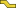
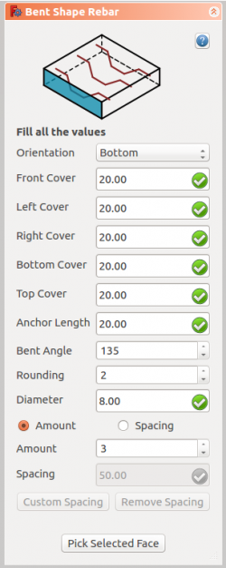

|
| Ubicación del menú |
|---|
| Arch → Rebar tools |
| Bancos de trabajo |
| Arquitectura |
| Acceso directo |
| None |
| Ver también |
| Estribo |
| Este comando es parte del Reinforcement AddOn, que puedes instalar a través del menú Tools → Addons Manager |
Descripción
La herramienta  Bent Shape Rebar permite al usuario crear una barra de refuerzo de forma doblada en el elemento estructural.
{kind=link}

Como utilizar
- Crear un elemento structure
- Seleccione cualquier cara de la estructura
- Luego seleccione Bent Shape Rebar desde las herramientas de la barra de refuerzo
- Aparecerá un panel de tareas en el lado izquierdo de la pantalla como se muestra a continuación 
- Seleccione la orientación deseada
- Proporcione las entradas como cubierta frontal, cubierta izquierda, cubierta derecha, cubierta inferior, cubierta superior, longitud de anclaje, ángulo doblado, redondeado y diámetro de la barra de refuerzo
- Seleccione el modo de distribución, ya sea cantidad o espaciado
- Si se selecciona el espaciado, un usuario también puede optar por espaciado personalizado
- La selección de la cara seleccionada se usa para verificar o cambiar la cara de la distribución de barras de refuerzo
- Haga clic en OK o Apply para generar las barras de refuerzo
- Haga clic en Cancel para salir del panel de tareas
{kind=link}
Propiedades
- DATOS Orientation: Decide la orientación de la barra de refuerzo (como una parte inferior, superior, derecha e izquierda).
- DATOS Front Cover: la distancia entre la barra de refuerzo y la cara seleccionada.
- DATOS Left Cover: la distancia entre el extremo izquierdo de la barra de refuerzo a la cara izquierda de la estructura.
- DATOS Right Cover: la distancia entre el extremo derecho de la barra de refuerzo a la derecha de la estructura.
- DATOS Bottom Cover: la distancia entre las barras de refuerzo desde la cara inferior de la estructura.
- DATOS Top Cover: la distancia entre barras de refuerzo desde la cara superior de la estructura.
- DATOS Anchor Length: es la longitud del brazo de la barra de refuerzo de forma doblada.
- DATOS Bent Angle: Decide el ángulo en la barra de herramientas de forma doblada.
- DATOS Amount: la cantidad de barras de refuerzo.
- DATOS Spacing: la distancia entre los ejes de cada barra.
Programación
La herramienta Bent Shape Rebar puede usarse en macros y desde la consola de python mediante la siguiente función:
makeBentShapeRebar(FrontCover, BottomCover, LeftCover, RightCover, Diameter, TopCover, BentLength, BentAngle, Rounding, AmountSpacingCheck, AmountSpacingValue, Orientation, Structure, Facename)
- La barra de refuerzo doblada tiene cuatro orientaciones diferentes:
- Fondo
- Superior
- Izquierda
- Derecha
- Agrega un objeto de barra de refuerzo doblada al objeto estructural dado.
- Si no se proporciona Estructura y nombre de cara, tomará la cara seleccionada por el usuario como entrada.
- Aquí el argumento de CoverAlong es tener tipo tupla.
- Devuelve el nuevo objeto de refuerzo.
Ejemplo: Creando barras de refuerzo de forma doblada.
import Arch, BentShapeRebar structure = Arch.makeStructure(length=1000.0, width=1000.0, height=100.0) structure.ViewObject.Transparency = 80 FreeCAD.ActiveDocument.recompute() rebar = BentShapeRebar.makeBentShapeRebar(20, 20, 20, 20, 8, 20, 100, 135, 2, True, 10, "Bottom", structure, "Face1")
Cambio de propiedades de la barra de refuerzo de forma doblada.
import BentShapeRebar BentShapeRebar.editBentShapeRebar(rebar, 50, 50, 50, 50, 12, 20, 100, 135, 2, True, 10, "Top")